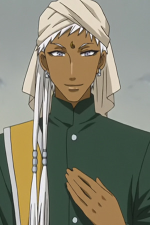
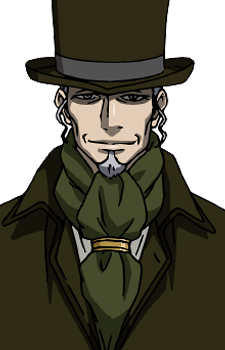
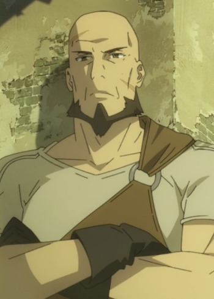

|
Agil |
- Sword Art Online
- Sword Art Online: Extra Edition
- Sword Art Online 2
- Sword Art Online Movie: Ordinal Scale
- Sword Art Online: Alicization
|
Agil or Andrew Gilbert Mills was a player that got trapped for 2 years in Sword Art Online. Agil was a merchant on the 50th floor of Aincrad in the city of Alegate. In the real world, he is marry and owns a bar called Dicey Cafe. He returns to Alfeim as a player in Kirito Team.
|
|  |
Agni |
- Black Butler
- Black Butler: His Bulter, Performer
- Black Butler 2
- Black Butler 2 Specials
- Black Butler Picture Drama
- Black Butler: Book of Circus
- Black Butler: Book of Murder
|
Agni is Soma Kadar's highly-dedicated butler. Agni is a skill master at Indian cooking and some skill at landscaping. He is an impressive martial art skills. He is a kind, caring and compassionate person. |
 |
Christophe Giacometti |
|
Christophe Giacometti is a Swiss figure skater. He has a love for figure skating. Chris is a very sexual person, which reflects his personal relationships and his figure skating. He is self-confident enough to not care much about what people think of him. He tends to become very immersed in his performances. |
|  |
Duodecuple |
|
Duodecuple is the moderator of the Juuni Taisen.
|
 |
Elfman Strauss |
- Fairy Tail
- Fairy Tail OVA
- Fairy Tail the Movie: Phoenix Priestess
- Fairy Tail (2014)
- Fairy Tail OVA (2016)
- Fairy Tail Movie 2: Dragon Cry
|
Elfman Strauss is a member of the guild Fairy Tail. He is the younger brother of Mirajane Strauss and older brother of Lisanna Strauss. His magic is Take Over ability. He is euthusiasthic, but he obessed with manliness and has speech about manhood. |
|  |
Erhard |
- The Rising of the Shield Hero
|
Erhard is a blacksmith and a weapon shop owner in Castle Town of Melromarc. He is a cheerful and nice person but, he will go out of his way to get angry for someone else's sake. He can tell if someone is lying to him or not. He does not believe in the Church of Three Heros. |
 |
Subaru Mimasaka |
- Food Wars! The Second Plate
- Food Wars! The Second Plate OVA
- Food Wars! The Third Plate
|
Subaru Mimasaka is 92nd Tootsuki Generation student at Tootsuki Culinary Academy. He come off as a big, punkish dude but he is honorable and friendly man. Behind all that, he is sadistic and cruel. |